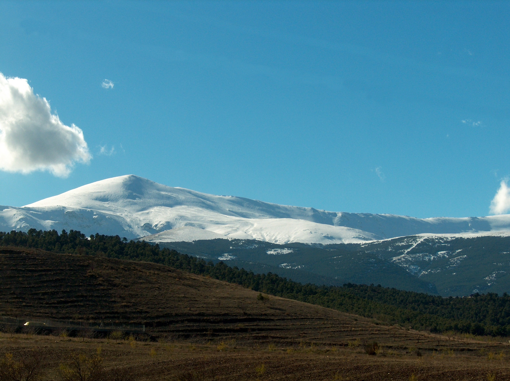

Imágenes editadas con GIMP
- Paso 1:
-
Pulsamos sobre la herramienta de clonación.
Con dicha herramienta podremos usar trozos de imagen y pintar con ellos en otra zona de la imagen.
- Paso 2:
-
Pulsamos CTRL y el botón izquierdo del ratón para marcar el origen y a continuación pulsaremos el ratón y lo arrastraremos cuando queramos clonar la zona original.
Podemos ir probando y deshaciendo hasta hacernos con el funcionamiento de esta herramienta. Vamos clonando el cielo hasta tapar del todo los cables.
- Paso 3:
-
Redimensionamos la imagen y la guardamos.
Imágen de Sierra editada
Imágen original

Imágen editada
